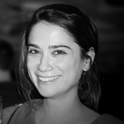
Zeynep Saygin, Ph.D.
P.I., Assistant Professor of Psychology
Ph.D., Systems Neuroscience, Massachusetts Institute of Technology (MIT)
B.Sc., Neuroscience, Brown University
Email: saygin dot 3 at osu dot edu
CV
Ph.D., Systems Neuroscience, Massachusetts Institute of Technology (MIT)
B.Sc., Neuroscience, Brown University
Email: saygin dot 3 at osu dot edu
CV
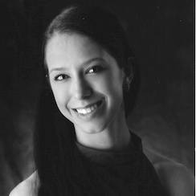
Patricia Stefancin
Lab Manager
MSc Cognitive Neuroscience and Human Neuroimaging, University of Sheffield
BA, Psychology-Neuroscience, Mercyhurst University
Bio: My research interests include the effects of subconcussive and concussive impacts on the development of attention, as well as networks of consciousness. Previously my researched observed the correlation of white matter connectivity between the medial dorsal nucleus of the thalamus and prefrontal cortex and regaining consciousness in coma patients.
Email: stefancin dot 11 at osu dot edu
BA, Psychology-Neuroscience, Mercyhurst University
Bio: My research interests include the effects of subconcussive and concussive impacts on the development of attention, as well as networks of consciousness. Previously my researched observed the correlation of white matter connectivity between the medial dorsal nucleus of the thalamus and prefrontal cortex and regaining consciousness in coma patients.
Email: stefancin dot 11 at osu dot edu
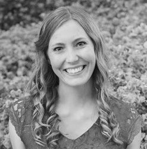
Heather Hansen
Graduate Student
M.A., Psychology, The Ohio State University
B.S., Psychobiology, UCLA
Bio: I am interested in attention and cognitive control, specifically how we focus on relevant stimuli and ignore irrelevant stimuli. I am particularly interested in studying individuals with Misophonia,
a condition characterized by over-sensitivity and increased attention to certain environmental noises. I am working with Dr. Saygin to explore this condition from a neuroimaging standpoint, such as through connectivity patterns, structural differences, and developmental origins.
Email: hansen dot 508 at osu dot edu
B.S., Psychobiology, UCLA
Bio: I am interested in attention and cognitive control, specifically how we focus on relevant stimuli and ignore irrelevant stimuli. I am particularly interested in studying individuals with Misophonia,
a condition characterized by over-sensitivity and increased attention to certain environmental noises. I am working with Dr. Saygin to explore this condition from a neuroimaging standpoint, such as through connectivity patterns, structural differences, and developmental origins.
Email: hansen dot 508 at osu dot edu
Jin Li
Graduate Student
M.S., Cognitive Neuroscience, Beijing Normal University
Bio: I am interested in the large-scale organization of the human cortex: why human brain patterns in this particular way (highly functional specialize modules) and how this develops. I am working with Dr. Saygin to explore whether adult-like architectures already in neonates’ brains? If so how they ‘shaped’ or ‘modified’ by environment and experience? Whether different functional modules interact in different ways throughout the development? I also very looking forward to linking underlying structures in the early stages to the cognition like high-level vision, language, etc.
Email: li dot 9361 at osu dot edu
Bio: I am interested in the large-scale organization of the human cortex: why human brain patterns in this particular way (highly functional specialize modules) and how this develops. I am working with Dr. Saygin to explore whether adult-like architectures already in neonates’ brains? If so how they ‘shaped’ or ‘modified’ by environment and experience? Whether different functional modules interact in different ways throughout the development? I also very looking forward to linking underlying structures in the early stages to the cognition like high-level vision, language, etc.
Email: li dot 9361 at osu dot edu
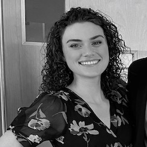
Fiona Molloy
Graduate Student
B.S., Neuroscience, The Ohio State University
Bio: I am interested in using computational modeling and neuroimaging to understand how individual differences in the brain can shape behavior and change throughout development and adulthood. I am also interested in the neural mechanisms of cognitive processes, including decision-making and cognitive control, and their applications in clinical contexts, particularly with substance use disorders. Currently, I’m working with Dr. Saygin to map the structural and functional connectivity of neonatal brains and to explore how this connectivity relates to higher-order cognitive processes.
Email: molloy dot 35 at osu dot edu
Bio: I am interested in using computational modeling and neuroimaging to understand how individual differences in the brain can shape behavior and change throughout development and adulthood. I am also interested in the neural mechanisms of cognitive processes, including decision-making and cognitive control, and their applications in clinical contexts, particularly with substance use disorders. Currently, I’m working with Dr. Saygin to map the structural and functional connectivity of neonatal brains and to explore how this connectivity relates to higher-order cognitive processes.
Email: molloy dot 35 at osu dot edu
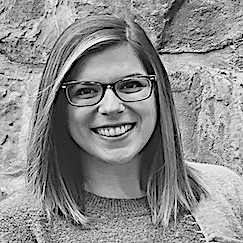
Elana Schettini
Graduate Student
B.S., Neuroscience, University of Miami
MS, Psychology, Ohio State University
I am interested in the biological underpinnings of vulnerability to emotion dysregulation in children and adolescents. Using neuroimaging techniques, I aim to investigate neural mechanisms of childhood psychopathology, and how such vulnerabilities interact with environmental factors (risk and protective) to predict development and persistence of maladaptive coping behaviors in late childhood and adolescence. Ultimately, I hope my research will contribute towards efforts of early diagnosis and early intervention for high-risk youth.
Email: schettini dot 1 at buckeyemail dot osu dot edu
I am interested in the biological underpinnings of vulnerability to emotion dysregulation in children and adolescents. Using neuroimaging techniques, I aim to investigate neural mechanisms of childhood psychopathology, and how such vulnerabilities interact with environmental factors (risk and protective) to predict development and persistence of maladaptive coping behaviors in late childhood and adolescence. Ultimately, I hope my research will contribute towards efforts of early diagnosis and early intervention for high-risk youth.
Email: schettini dot 1 at buckeyemail dot osu dot edu
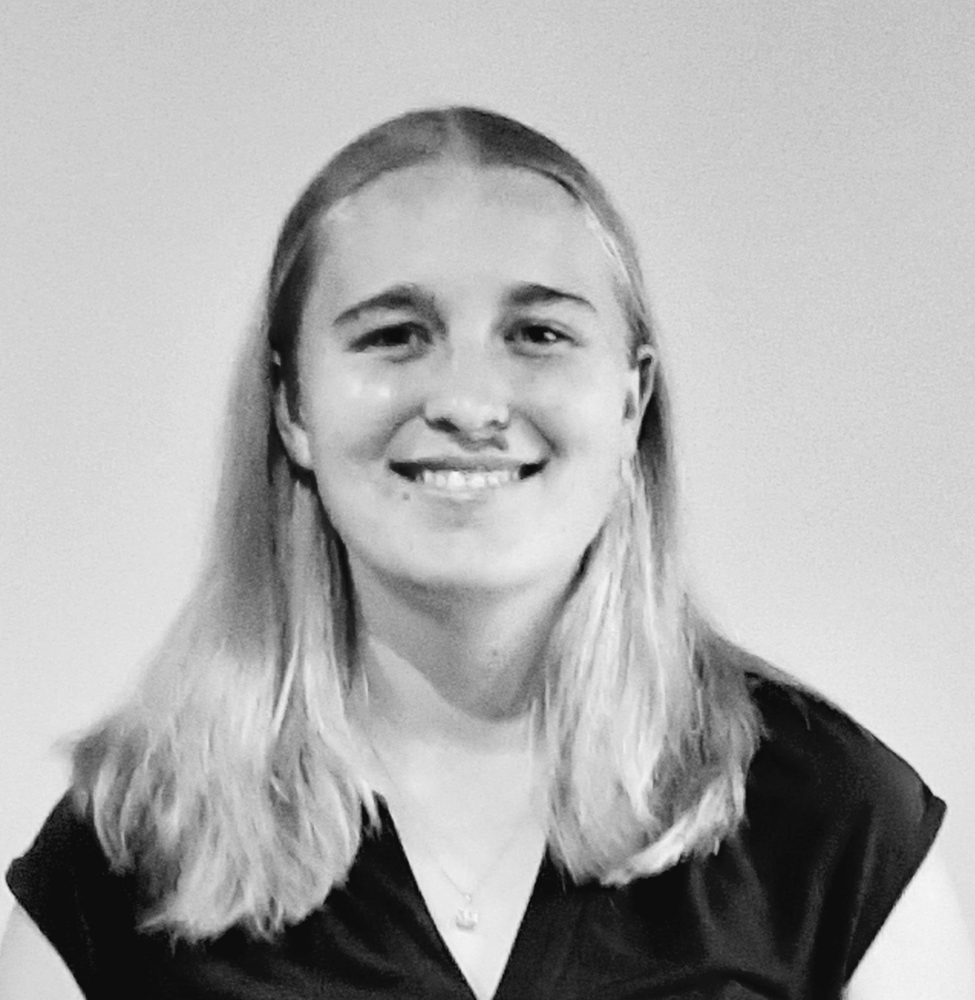
Kelly Hiersche
Graduate Student
B.S., Physics, Adelphi University
I am interested in using neuroimaging, behavioral measures, and computational modeling to understand the development of reading ability in the brain. How do regions of the brain specialize for reading and language development? Why do some individuals struggle early on when learning to read, while others excel? I am working with Dr. Saygin to explore specialization and connectivity of regions like the visual word form to answer these types of questions. My long-term goal is to predict educational outcomes across students and leverage these findings to address questions concerning disparities in educational success and attainment.
Email: hiersche dot 1 at osu dot edu
I am interested in using neuroimaging, behavioral measures, and computational modeling to understand the development of reading ability in the brain. How do regions of the brain specialize for reading and language development? Why do some individuals struggle early on when learning to read, while others excel? I am working with Dr. Saygin to explore specialization and connectivity of regions like the visual word form to answer these types of questions. My long-term goal is to predict educational outcomes across students and leverage these findings to address questions concerning disparities in educational success and attainment.
Email: hiersche dot 1 at osu dot edu

Andrew Sarmir
Undergraduate Research Assistant
Psychology Major, Ohio State
Bio: I am interested in working with children towards improving the way we approach education. I aspire to become a child psychologist specializing in educational development. To me, it is very important to recognize that not all children learn and develop the same way, therefore the way we educate should not be either. I hope that through research we can better understand these differences and apply it to improve the way we teach!
Email: sarmir dot 3 at buckeyemail dot osu dot edu
Bio: I am interested in working with children towards improving the way we approach education. I aspire to become a child psychologist specializing in educational development. To me, it is very important to recognize that not all children learn and develop the same way, therefore the way we educate should not be either. I hope that through research we can better understand these differences and apply it to improve the way we teach!
Email: sarmir dot 3 at buckeyemail dot osu dot edu
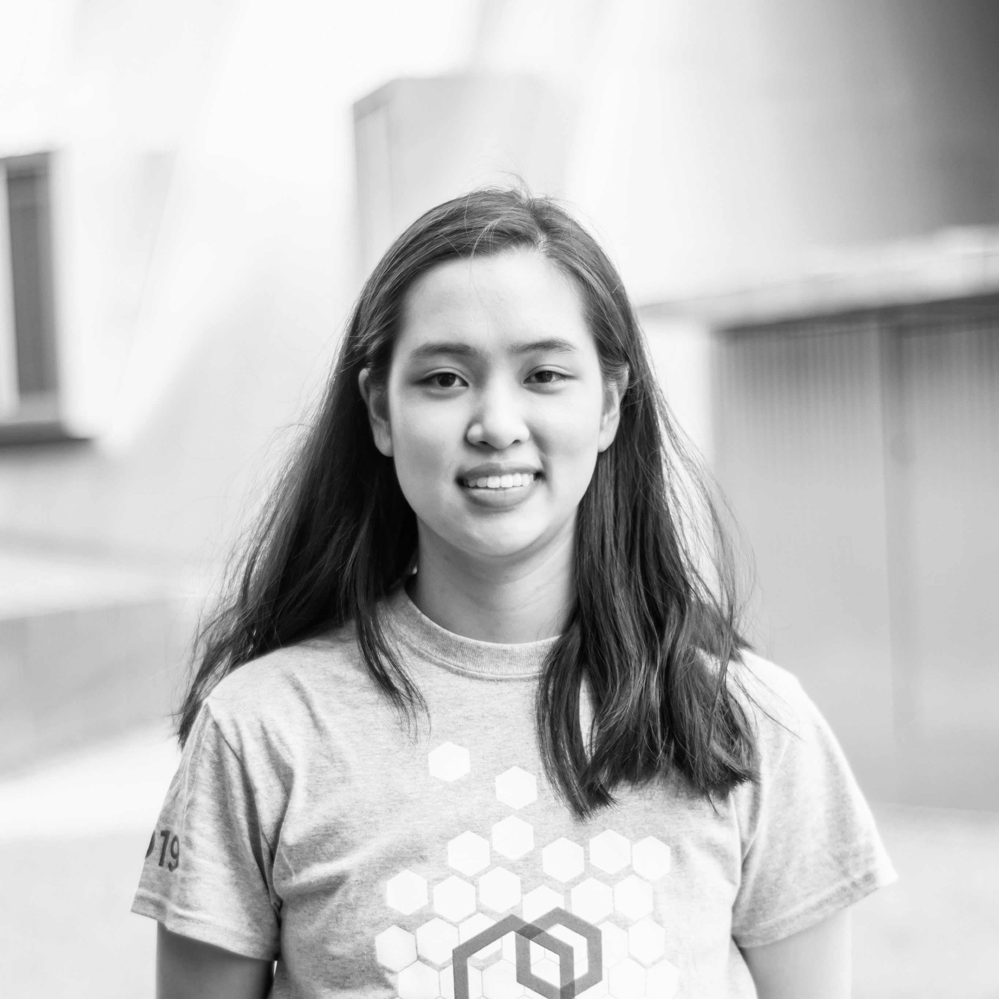
Emily Yu
Undergraduate Research Assistant
Biomedical Engineering Major
Bio: As a high school student, I became interested in connectomics and therefore neuroscience as well. At the Z-lab, I hope to integrate my interest in the brain with my technical background for a diverse perspective on scientific research. I aspire to eventually go to medical school, utilizing my experience in research and neuroimaging.
Email: yu dot 2947 at osu dot edu

Divya Gopal
Undergraduate Research Assistant
Neuroscience Major
Bio: I’m a second-year student at Ohio State majoring in neuroscience and minoring in fashion and retail studies hoping to attend medical school after my undergraduate studies. I’m passionate about women’s health, volunteering, and developmental neuroscience! I’m excited about working in the Z-Lab and learning about young brains.
Email: gopal dot 44 at osu dot edu

Brenden Dalton
Undergraduate Research Assistant
Neuroscience Major
Bio: As someone who played football growing up, I am interested in research on the effect of concussive damage in children and its effect on brain function. My goal is to use my research experiences to foster an inquisitive mindset and carry it over to medicine.
Email: dalton dot 294 at buckeyemail dot osu dot edu
Email: dalton dot 294 at buckeyemail dot osu dot edu
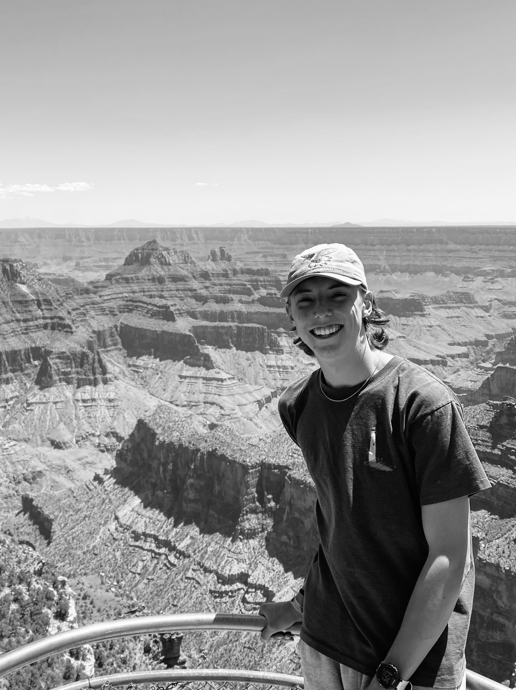
Andrew Sarmir
Undergraduate Research Assistant
Psychology Major
Bio: I am interested in working with children towards improving the way we approach education. I aspire to become a child psychologist specializing in educational development. To me, it is very important to recognize that not all children learn and develop the same way, therefore the way we educate should not be either. I hope that through research we can better understand these differences and apply it to improve the way we teach!
Email: sarmir dot 3 at buckeyemail dot osu dot edu
Email: sarmir dot 3 at buckeyemail dot osu dot edu
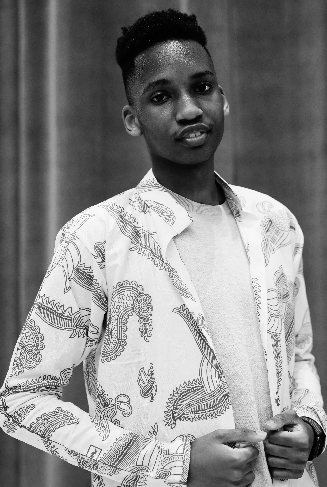
Adjuna Mwesigye
Undergraduate Research Assistant
Neuroscience Major
Bio: I am a rising junior pursuing a Neuroscience major at the Ohio State University with the aim of attaining an MD/PhD doctorate degree because of my interest in both medicine and research. As a child of a recovering cancer patient, I am interested in the correlates between cancer and cognitive development across all ages. I hope to use my research experiences at the Z-lab to further my career goals and interests.
Email: mwesigye dot 1 at buckeyemail dot osu dot edu
Email: mwesigye dot 1 at buckeyemail dot osu dot edu
Alumni
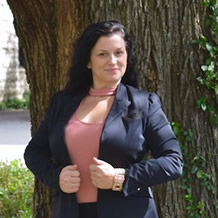
Renee Brooks
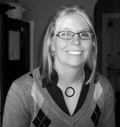
Maggie Beard
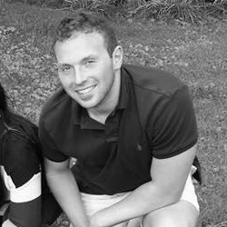
Micah Rhodes
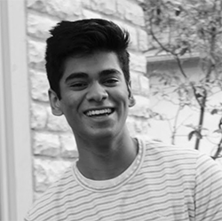
Eshwar Madishetti
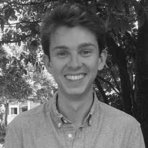
Carver Nabb
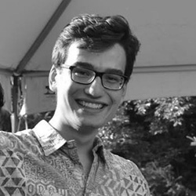
Justin Flanagan
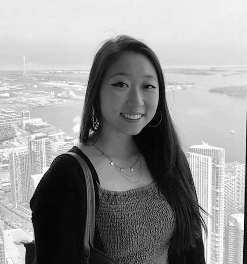
Lilly Lin
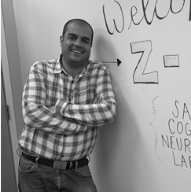
Arman Bordbar
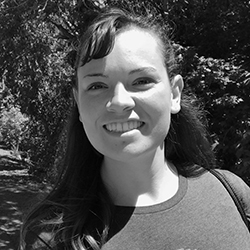
Athena Lee Howell
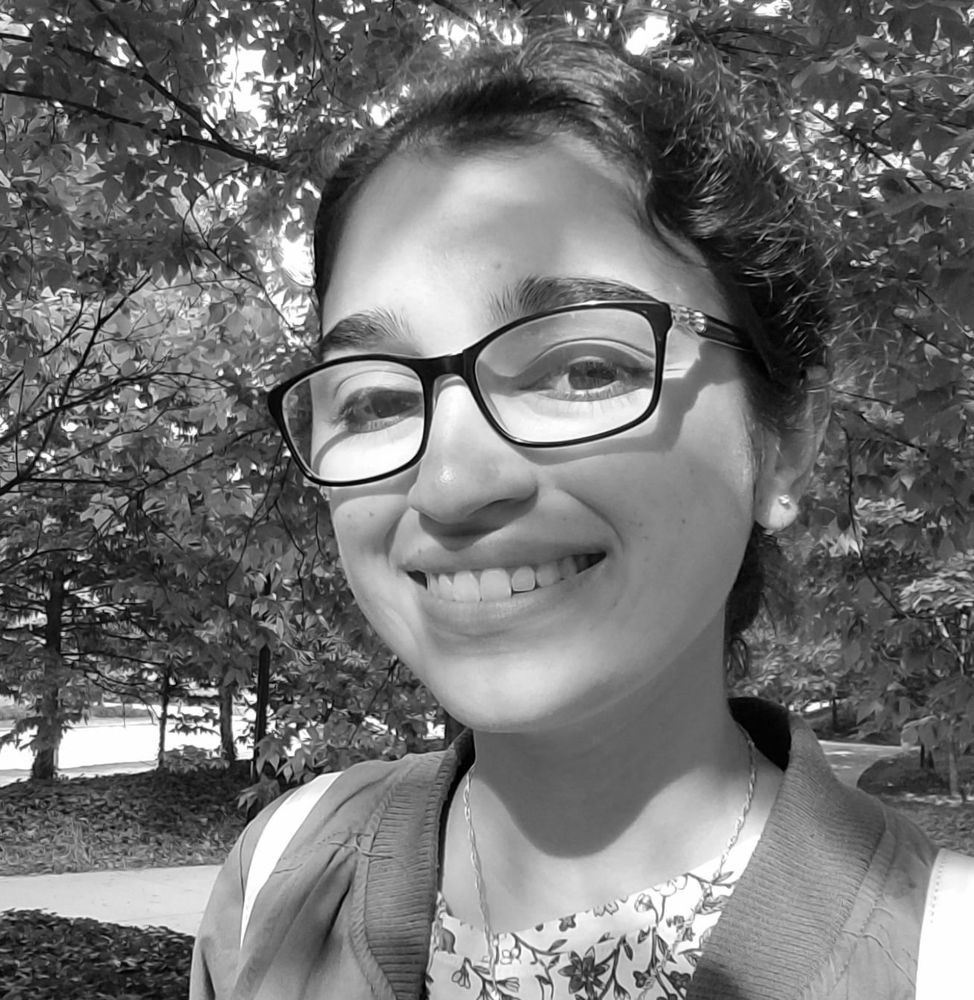
Amanie Rasul
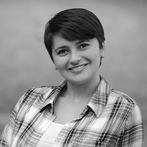
Yasemin Gokcen
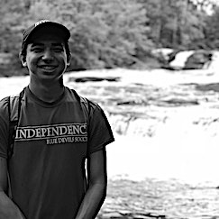